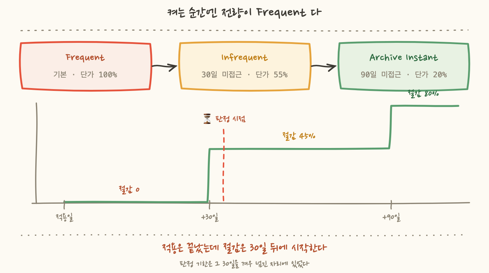
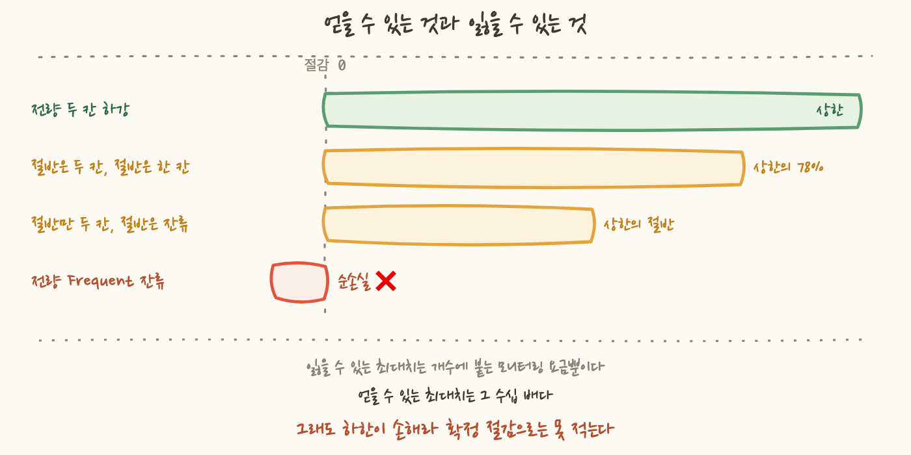

객체 스토리지 항목을 열었을 때 저는 범인을 이미 정해두고 있었어요. 로그일 거라고 생각했습니다. 애플리케이션 로그, 접근 로그, 빌드 산출물. 아무도 안 들여다보는데 매일 쌓이는 것들이잖아요. 저걸 걷어내면 큰 덩어리가 하나 나올 줄 알았습니다.
버킷별로 용량을 다시 세어보니 아니었어요. 상위권은 전부 업무 데이터였습니다. 그중 하나는 6.3 TB 였고, 그 서비스 객체 스토리지 청구액의 42% 를 혼자 차지하고 있었어요. 그리고 그 데이터는 지울 수 없는 것이었습니다.
그래서 데이터를 그대로 두고 요금 등급만 내리는 방법을 골랐고 적용까지 끝냈어요. 그런데 켜고 나서 확보한 절감액이 0 이었습니다. 실패해서가 아니에요. 이 방식이 원래 그렇게 생겼기 때문입니다. 8편에서도 그날 확보한 절감액이 0 이었는데 그때는 항목들이 애초에 절감이 아니어서였습니다. 이번에는 이유가 달라요.
가정부터 적어둘게요. 저는 객체 스토리지 비용을 줄이라는 항목을 받고 곧바로 로그 버킷을 떠올렸습니다. 이유를 따져보면 근거가 있어서가 아니었어요. 지워도 되는 것이라서였습니다.
로그는 보존 기간을 정해서 만료시키면 되고 만료 규칙 하나로 정리가 끝나요. 결정이 쉽고 되돌릴 필요도 없고 작업이 짧습니다. 그래서 머릿속에서 제일 먼저 떠오릅니다. 저는 큰 것을 찾은 게 아니라 다루기 쉬운 것을 먼저 떠올린 거예요.
실측 결과는 이랬습니다.
4편에서 유휴의 증거를 잘못 골랐던 것과 같은 종류의 실수예요. 그때는 "지표가 0 이면 안 쓰는 것"이라고 가정했고, 이번에는 "이름이 로그면 클 것"이라고 가정했습니다. 둘 다 재보기 전에 순서를 정해버린 것이 문제였어요. 6편에서 이름이 다섯 번 거짓말했다고 썼는데, 여기서는 이름이 거짓말을 하지 않았어요. 제가 이름을 근거로 썼습니다.
그리고 상위 버킷의 성격이 확인되면서 선택지 하나가 그 자리에서 사라졌어요. 업무 데이터라 삭제나 만료 규칙은 처음부터 대상이 아니었습니다. 규제 대상 업무 문서였고 보존해야 하는 기간이 정해져 있어요. 몇 년 지난 문서도 요청이 오면 원본을 그대로 내줘야 합니다.
7편에서 삭제에도 문법이 있다고 썼는데 이번 항목에서는 그 문법을 쓸 자리가 없었어요. 지울 수 있는 것과 지울 수 없는 것을 가르는 선이 첫 칸에 있었고 이 데이터는 저쪽이었습니다.
데이터를 그대로 둔 채 요금만 줄이는 방법이 뭐가 있는지 따져봤습니다. 세 갈래가 나왔어요.
첫째는 데이터 자체를 줄이는 것입니다. 압축하거나 중복을 없애는 방법이에요. 이건 저장된 문서의 형식이 바뀌는 것이라 읽는 쪽 코드가 같이 바뀌어야 합니다. 원본을 그대로 내줘야 하는 문서에서는 검토할 것이 많고, 무엇보다 이 작업의 기한 안에 끝날 크기가 아니었어요.
둘째는 보관 등급을 수동으로 내리는 것입니다. 며칠 지난 객체를 값싼 등급으로 옮기라는 규칙을 직접 거는 방식이에요. 단가는 확실히 내려가는데 이 방식은 조회 패턴을 알고 있어야 성립합니다.
값싼 등급에는 두 가지가 따라붙기 때문이에요. 하나는 검색 요금입니다. 내려간 객체를 다시 읽을 때 읽기 요금이 별도로 붙어요. 다른 하나는 최소 보존 기간입니다. 내린 지 얼마 안 돼서 다시 올리면 남은 기간만큼의 요금을 그대로 냅니다. 그래서 이 방식은 판단이 틀렸을 때 절감이 0 이 되는 게 아니라 마이너스가 돼요.
그런데 이 데이터의 조회 패턴을 저는 몰랐습니다. 오래된 문서를 얼마나 자주 다시 꺼내는지, 특정 시기에 몰리는지, 몰린다면 얼마나 오래된 것이 나오는지. 앱 로그를 뒤지면 언젠가는 나오겠지만 그건 이 항목 하나에 쓸 수 있는 시간을 넘어섰어요. 이 방법이 나쁘다는 뜻은 아닙니다. 성격을 아는 데이터에는 이쪽이 맞아요. 이 데이터에 그 근거가 없었을 뿐입니다.
셋째가 지능형 계층화(Intelligent-Tiering) 입니다. 이걸 골랐어요. 고른 이유가 절감이 제일 커서가 아니라 조회 패턴을 몰라도 되기 때문이었습니다.
동작은 이래요. 객체별로 접근 기록이 쌓이고, 일정 기간 접근이 없으면 등급이 자동으로 한 칸 내려갑니다. 등급은 셋이고 이름이 곧 성격이에요. 자주 읽히면 Frequent, 뜸해지면 Infrequent, 더 뜸해지면 Archive Instant 입니다. 무엇을 접근으로 치는지는 생각보다 좁아서, 객체를 실제로 읽거나 쓰면 접근이고 목록을 훑거나 헤더만 보는 것은 접근이 아니에요. 그리고 다시 접근하면 그 자리에서 원래 등급으로 올라갑니다. 여기가 핵심인데, 이 방식에는 검색 요금이 없고 최소 보존 기간도 없습니다. 그래서 "내렸는데 알고 보니 자주 쓰는 객체였다"가 손해로 이어지지 않아요. 그냥 다시 올라가고 끝입니다. 단, 이건 자동으로 오르내리는 이 세 등급에 한한 이야기입니다. 꺼내는 데 시간이 걸리는 선택형 등급을 추가로 켜면 복원 절차와 최소 보존 기간이 그때부터 다시 붙어요. 이번에는 안 켰습니다.
애플리케이션 쪽에서 보면 아무 일도 일어나지 않습니다. 객체 키가 그대로고, 읽고 쓰는 방법이 그대로고, 권한이 그대로고, 응답 지연도 그대로예요. 애플리케이션이 볼 수 있는 것 중에 바뀌는 게 없어서, 전환이 일어났는지를 코드 쪽에서는 알 수 없습니다. 10편에서 다운타임 없이 요금 모델만 바꿨던 것과 같은 계열이에요. 그 편은 컴퓨트였고 이번은 스토리지인데, 성립하는 조건이 같습니다. 동작이 아니라 계산식만 건드리는 변경이라는 점이요. 다만 그 계산식 안쪽에서 바뀌는 것이 등급 하나만은 아닙니다. 항목이 하나 더 생겨요. 그게 4장입니다.
규칙을 걸고, 콘솔에서 적용된 것을 확인하고, 작업 목록에 완료 표시를 했습니다. 여기까지 걸린 시간이 길지 않았어요. 그리고 절감액을 적으려고 등급별 단가를 다시 확인하다가 멈췄습니다.
등급은 미접근 기간이 쌓여야 내려갑니다. 그런데 규칙을 켠 시점에는 어떤 객체도 미접근 기간을 갖고 있지 않아요. 접근 기록은 규칙을 켠 다음부터 세기 시작하니까요. 그러니까 전량이 Frequent 로 들어가고, Frequent 의 단가는 원래 등급과 같습니다.
시간 축을 그리면 이렇게 돼요. 적용일 기준으로 30일이 지나야 첫 절감이 시작되고 90일이 지나야 전액이 나옵니다. 그 사이는 부분입니다.
이게 왜 문제였냐면 이 절감 과제에 기한이 있었기 때문이에요. 판정 시점까지 한 달 남짓 남아 있었습니다. 그러니까 이 항목은 판정 시점에 거의 아무것도 기여하지 못합니다. 잘 되면 30일 문턱을 막 넘긴 일부가 45% 씩 내려가기 시작한 상태겠고, 그것도 그 시점에 미접근 30일을 채운 객체에 한해서예요.

8편에서 "그날 확보한 절감액은 0이었다"고 썼을 때와 비교해볼게요. 그때 0 이었던 이유는 후보들이 애초에 절감이 아니었기 때문입니다. 열어보니 이미 약정이 덮고 있거나, 자동화가 이미 돌고 있어 이중 계산이거나, 끌 수 없는 것들이었어요. 그래서 그날의 산출은 절감액이 아니라 제외 목록이었고 미확보 갭은 오히려 늘었습니다. 더 매달려도 그 항목들에서는 숫자가 안 나오는 상태였어요.
이번은 반대입니다. 할 일은 다 끝났는데 절감이 0 이에요. 더 할 것이 없고 남은 것은 기다리는 일뿐입니다. 8편의 0 은 범위의 문제였고 이번의 0 은 시간 축의 문제예요.
이 구분이 실무에서 갖는 무게가 있어요. 범위가 문제면 "이건 목록에서 뺍니다"를 답하면 됩니다. 시간 축이 문제면 뺄 수도 없어요. 작업은 이미 끝났고 항목도 살아 있으니까요. 답해야 하는 질문이 "언제 숫자가 나오나"로 바뀌고 그건 제가 당길 수 있는 게 아닙니다.
기다리면 나온다면 그래도 낫습니다. 문제는 얼마가 나오는지를 지금 말할 수 없다는 거예요. 그리고 그 범위의 아래쪽 끝이 0 이 아닙니다.
절감액은 이렇게 정해집니다. 내려간 용량 곱하기 단가 차이예요. 접근이 계속 있는 객체는 Frequent 에 남고, Frequent 에 남은 용량의 절감은 0 입니다. 여기까지는 "잘 안 되면 0" 이라는 평범한 이야기예요.
그런데 지능형 계층화는 모니터링 요금을 따로 받습니다. 접근 기록을 객체 단위로 추적해야 하니까요. 이 요금은 객체 1,000개당 정해진 금액이고 용량과 무관하게 개수에만 붙습니다.
그러면 이렇게 됩니다. 전량이 계속 접근되어 하나도 안 내려가면 모니터링 요금만 나가고 절감은 0 이에요. 그게 순손실입니다.
3편에서 "그럴듯한 숫자가 가장 위험하다"고 썼는데 여기가 딱 그 자리예요. 이 항목의 상한은 계산이 쉽습니다. 6.3 TB 가 지금 내고 있는 요금에 80% 를 곱하면 되니까요. 그 숫자는 크고, 계산 과정도 흠잡을 데가 없고, 그래서 절감액 칸에 적어놓으면 아무도 의심하지 않습니다.
그런데 그 숫자가 성립하려면 전량이 90일 동안 한 번도 안 읽혀야 해요. 그건 가정이지 측정이 아닙니다. 상한을 적는 순간 저는 가정을 측정으로 바꿔치기하는 거예요.

그러니까 이 항목은 확정 절감으로 계상할 수 없습니다. 확정이라는 말은 하한이 0 이상일 때 쓸 수 있는 거예요. 하한이 마이너스면 그건 확정이 아니라 베팅입니다.
그런데 저는 켰어요. 이유는 상한과 하한의 비대칭입니다. 잃을 수 있는 최대치는 모니터링 요금뿐이고 그건 객체 개수로 미리 계산이 됩니다. 얻을 수 있는 최대치는 그 수십 배예요. 그리고 아까 적었듯이 틀렸다고 판명나면 규칙을 끄면 되고 끄는 데 위약금이 없습니다.
이 판단을 문장으로 적으면 이렇게 됩니다. "기대값이 크다"가 아니라 "최악을 계산할 수 있고 그 최악이 작다"가 근거예요. 앞의 것은 분포를 알아야 말할 수 있어요. 뒤엣것은 객체 개수만 알면 말할 수 있습니다. 저는 분포를 몰랐으니 뒤의 근거로만 결정했어요.
3장의 0 과 4장의 마이너스 다음으로, 세 번째로 걸린 것이 있어요. 모니터링 요금이 개수에 붙는다는 사실에는 짝이 되는 조건이 하나 더 있습니다. 128 KB 미만 객체는 계층화 대상에서 빠집니다. 작은 객체는 등급을 내려도 절감이 오버헤드를 못 넘기 때문이에요.
이 문턱은 규칙의 기본값으로 이미 걸려 있었습니다. 손으로 켠 게 아니에요. 문턱 아래 객체는 어느 등급으로도 옮기지 않는 것이 기본 동작입니다. 그리고 다행히 이 문턱은 한쪽만 막는 게 아니라 양쪽을 다 막습니다. 문턱 아래 객체는 등급이 안 내려가고, 모니터링 대상에서도 같이 빠져서 개수 요금이 안 붙어요. 규칙을 걸어도 그 객체들에는 아무 일도 일어나지 않습니다.
그러면 걱정할 게 없어 보이는데, 위험한 자리는 문턱 아래가 아니라 문턱 바로 위였습니다. 128 KB 를 조금 넘긴 객체는 모니터링 대상이 되는데, 절감은 용량에 비례하니 딱 그 크기만큼밖에 못 벌어요. 문턱이 하필 128 KB 근처에 그어진 것이 바로 그 손익분기점이기 때문입니다. 문턱을 갓 넘긴 객체는 자기 모니터링 요금을 겨우 갚는 수준이고 그것도 두 칸을 다 내려갔을 때 이야기예요. 한 칸에서 멈추면 절감폭이 절반이라 본전을 맞추는 데 필요한 크기가 두 배 가까이 올라갑니다.
그러니까 4장에서 말한 순손실은 문턱 위쪽 이야기입니다. 문턱 아래는 오히려 그 위험에서 자동으로 빠져 있어요. 켜기 전에 확인해야 하는 것은 "작은 객체가 있느냐"가 아니었어요. "문턱 언저리에 얼마나 몰려 있느냐"였습니다.
순서로는 이 이야기가 3장보다 앞이에요. 켜기 전에 버킷별 평균 객체 크기를 먼저 쟀습니다. 총 용량을 객체 수로 나누면 나와요.
390만 개짜리 버킷 하나가 평균 111 KB 로 문턱 아래여서 빠졌습니다. 이관 도구가 뱉는 산출물이라 파일 하나하나가 작고 대신 개수가 많아요. 용량 목록에서는 상위권이었는데 이 방식으로는 손댈 수 없는 버킷이었습니다.
프론트엔드 정적 자산도 같은 이유로 뺐어요. 평균 20에서 60 KB 사이라 규칙을 걸어도 전부 문턱에 걸려 그대로 남습니다. 해가 되지는 않지만 얻는 것도 0 이라, 처리했다고 착각하지 않으려고 목록에서 뺐습니다.
그런데 여기서 5편의 이야기를 다시 꺼내야 해요. 평균은 사이징의 근거가 못 된다고 썼잖아요. 지금 저는 평균 객체 크기로 판정하고 있습니다.
따져보면 방향에 따라 성립 여부가 갈립니다. 평균이 문턱보다 아래면 안전하게 말할 수 있어요. 평균 111 KB 라는 것은 문턱 아래 객체가 상당한 비중이라는 뜻이고, 문턱 위쪽 객체가 아무리 섞여 있어도 "이 버킷은 계층화가 잘 먹는다"고 말할 수는 없습니다. 게다가 평균이 문턱 바로 밑이면 문턱을 넘는 객체들도 대개 문턱 언저리라, 모니터링은 붙는데 벌 것이 없는 구간이에요. 제외 판정은 이 근거로 충분합니다.
반대 방향은 다릅니다. 평균이 문턱보다 위라고 해서 대부분이 문턱 위에 있다는 뜻은 아니에요. 큰 객체 몇 개가 평균을 끌어올렸을 수 있고, 그러면 개수 기준으로는 절반 넘게 문턱 언저리일 수도 있습니다. 문턱 아래로 내려간 것들은 규칙이 알아서 빼주지만 문턱을 살짝 넘긴 것들은 안 빼줍니다. 그 구간이 정확히 본전 언저리예요.
그래서 217 KB 짜리 {모니터링 아카이브 버킷}를 "적합"이 아니라 "경계"로 적었습니다. 한 칸만 내려가는 경우의 본전선이 문턱의 두 배쯤인데 217 KB 가 정확히 그 자리예요. 두 칸까지 내려가 주면 이득이고 한 칸에서 멈추면 본전인데 어느 쪽인지는 평균으로 알 수 없습니다. 1.3 MB 이상인 상위 업무 데이터 버킷들은 문턱의 열 배가 넘으니 한 칸만 내려가도 여유가 있다고 봤습니다.
그래서 이 버킷은 이번 대상에서 뺐습니다. 다만 이유가 앞의 둘과 달라요. 문턱 아래라서 뺀 게 아니에요. 관찰에 맡길 자리가 아니라고 봤기 때문입니다. 로그는 성격이 뚜렷해서 조회 패턴을 알고 있고 알고 있으면 2장에서 접어둔 둘째 방법이 맞아요. 규칙을 직접 거는 쪽이요. 그 이야기는 다음 편입니다.
정리하면 이 항목의 상태는 이래요.
다행인 것은 나중에 실제 분포를 숫자로 확인할 수 있다는 점이에요. 등급별로 몇 GB 가 들어가 있는지가 지표로 나오고 그 지표는 조회에 요금이 붙지 않습니다. 그러니까 30일 뒤에 열어보면 "얼마나 내려갔나"가 그대로 나와요. 가정이 아니라 측정으로 바뀝니다.
9편에서 줄이기 전에 알람을 먼저 만들었다고 썼는데 성격이 비슷해요. 그때는 줄인 뒤에 문제가 생기면 알아챌 방법을 먼저 만든 것이었고, 이번은 절감이 실제로 났는지 확인할 방법을 적용과 같이 정해둔 겁니다. 둘 다 작업 자체가 아니라 작업의 결과를 볼 수 있게 만드는 일이에요.
그리고 이게 이 항목에서 특히 중요했습니다. 왜냐하면 이 항목은 잊히기 딱 좋은 모양이거든요. 작업은 끝났으니 목록에서 완료로 넘어가고, 금액 칸은 비어 있고, 비어 있는 칸은 아무도 다시 안 봅니다. 확인 시점을 안 적어두면 석 달 뒤에 "그거 얼마 나왔지"를 아무도 묻지 않은 채로 지나가요.
남은 이야기는 기한입니다. 이 항목은 판정 시점에 거의 0 으로 잡힙니다. 상한을 적으면 안 되고, 하한은 마이너스고, 그 사이의 실측값은 아직 없어요. 그러니 기한 있는 목록에 이 항목이 기여하는 숫자는 사실상 없습니다.
여기서 유혹이 하나 생겨요. 기여를 못 하니 다른 걸 하자는 판단입니다. 같은 시간을 즉시 절감이 잡히는 항목에 쓰면 목록의 숫자가 올라가니까요. 실제로 이 시리즈에서 다룬 항목 중에는 적용한 날 바로 청구서가 내려가는 것들이 있습니다.
그런데 그렇게 정하면 기한이 판단의 기준이 됩니다. 기한은 조직이 정한 날짜예요. 그 날짜가 이 데이터의 성질을 바꾸지는 않습니다. 6.3 TB 는 판정일 다음 날에도 그대로 있고 청구서는 그 뒤로도 매달 옵니다. 판정일에 안 잡힌다는 이유로 안 켜면 넉 달 뒤에도 안 켜져 있어요.
그래서 순서를 이렇게 뒀습니다. 기한 안에 잡히는 항목과 기한 밖에서 익는 항목을 같은 목록에 넣되, 금액 칸을 분리했어요. 앞의 것은 금액이 들어가고요. 뒤엣것에는 상태와 확인 시점이 들어갑니다. 그러면 목록의 합계는 정직해지고 뒤의 항목도 사라지지 않아요.
이 시리즈에서 절감이 0 이었던 편이 이제 둘입니다. 8편은 항목이 목록에서 빠져서 0 이었고 이번은 시간 축의 시작점에 서 있어서 0 이에요. 앞의 0 은 제가 뭘 더 해도 안 나오는 숫자였고, 이번 0 은 제가 아무것도 안 해도 나오는 숫자입니다. 나오게 하는 것은 달력이에요.